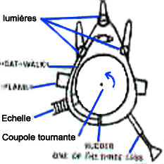
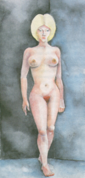
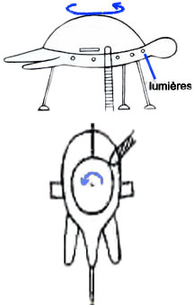

Dessins de l'appareil par Villas Boas en pour le Dr Olavo T. Fontès
Dans la nuit du , à Sao Francisco de Sales (Brésil), après 2
observations les jours précédents et alors qu'il est au volant de son tracteur et labourait les terres familiales,
Villas Boas voit d'abord comme une étoile rouge puis, alors que la lumière s'approche, un objet en forme d'oeuf, qui
se pose à proximité. Son tracteur cale et ses phares s'éteignent aussitôt.
Il tente de fuir, mais quelqu'un lui saisit le bras. Se retournant, il voit un petit être qu'il pousse violemment ;
il sera cependant maîtrisé par 3 autres petits personnages, en scaphandre avec un casque élevé, qui le traînent dans
l'objet.
Ils le déshabillent de force, l'aspergent d'un liquide, et l'emmènent dans une petite pièce carrée où il est
rapidement rejoint par une entité femelle. Elle mesure 0,90 m, possède de longs cheveux blancs et brillants, de
grands yeux bleus plus allongés que ronds et remontant vers les tempes, et un nez étroit ni pointu ni volumineux. La
forme de son visage frappe Antonio :

L'entité femelle décrite par Villas Boas
Ses pommettes étaient très hautes, ce qui faisait que sa face était très large. Mais elles s'amincissaient vers le
bas, donnant au visage une forme triangulaire. Ses lèvres étaient très fines, difficilement visibles. Ses oreilles
étaient petites, mais pas tellement plus que celles de femmes que je connais. Les deux pommettes très hautes
donnaient l'impression qu'il y avait un os en dessous mais, au toucher, il n'en était rien.

Dessins de l'appareil par Villas Boas en pour les docteurs Buhler et
Aquino de la Société Brésilienne pour l'Etude des Soucoupes Volantes
Elle lui fait clairement comprendre qu'elle est là pour s'accoupler. Antonio ne refuse pas ; ils le feront 2 fois.
Les cheveux de l'entité sont soyeux. Une fois terminé, la créature s'éloigne, sourit et pointe son doigt vers son
ventre, puis vers les étoiles. Villas Boas est ensuite débarqué sans ménagement et l'engin disparaît rapidement dans
le ciel.
Pendant 1 mois, Villas Boas souffre de nausées et a une envie irrépréssible de dormir. En novembre de la même
année, il se confie à un journaliste, João Martins, qui l'emmène voir le docteur Olavo Fontès. Ce dernier lui fait subir un certain nombre d'examens et découvre 2 petites
ponctions, de part et d'autre du menton. Il étudie plus généralement le cas avec le plus grand soin.
A la mort de Villa Boas en , des rumeurs indiquent alors qu'il se serait rendu aux USA au début
des années 1960s après y avoir été invité pour étudier les restes d'une soucoupe volante détenue par les
militaires. La Société Brésilienne d'Etude des Soucoupes Volantes produira la
lettre d'invitation. Le fils de Villas Boas confirmera quant à lui que son père était bien parti aux USA à cette
époque, mais qu'il avait toujours refusé de dire à sa famille ce qu'il y avait fait.